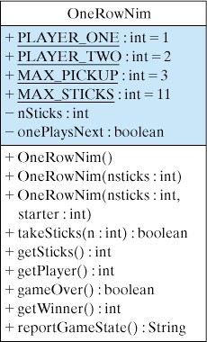
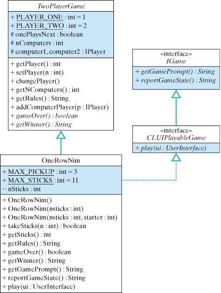
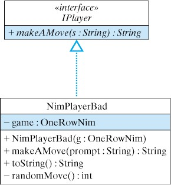
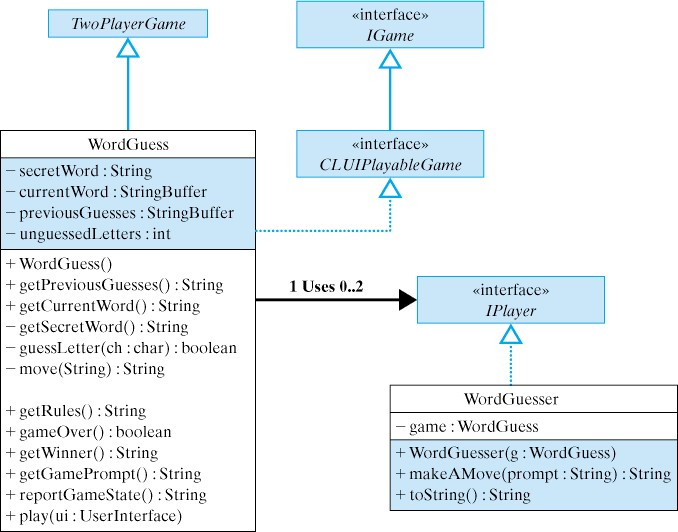

Principle 8.7.3. EFFECTIVE DESIGN: Abstract Methods.
Abstract methods allow you to give general definitions in the superclass and to leave the implementation details to the different subclasses.
OneRowNim game to fit within a hierarchy of classes of two-player games, which might include checkers, chess, tic-tac-toe, guessing games, and so forth.
OneRowNim is to make it easier to design and develop other two-player games.
OneRowNim game so that it fits into a hierarchy of two-player games. One way to do this is to generalize the OneRowNim game by creating a superclass that contains those attributes and methods that are common to all two-player games.
OneRowNim, will be defined as subclasses of this top-level superclass and will inherit and possibly override its public and protected variables and methods. Also, our top-level class will contain certain abstract methods, whose implementations will be given in OneRowNim and other subclasses.
TwoPlayerGame Class
OneRowNim game, we first need to design a top-level class, which we will call the TwoPlayerGame class. What variables and methods belong in this class?
OneRowNim by moving any variables and methods that apply to all two-player games up to the TwoPlayerGame class. All subclasses of TwoPlayerGame—which includes the OneRowNim class —would inherit these elements. Figure 8.7.1 shows the current design of OneRowNim. 
TwoPlayerGame class? Clearly, the class constants, PLAYER_ONE and PLAYER_TWO, apply to all two-player games. These should be moved up. On the other hand, the MAX_PICKUP and MAX_STICKS constants apply just to the OneRowNim game. They should remain in the OneRowNim class.
nSticks instance variable is a variable that only applies to the OneRowNim game, but not to other two-player games. It should stay in the OneRowNim class. On the other hand, the onePlaysNext variable applies to all two-player games, so we will move it up to the TwoPlayerGame class.
OneRowNim class. The instance methods, takeSticks() and getSticks(), are particular to OneRowNim, so they should remain there. However, the other methods, getPlayer(), gameOver(), getWinner(), and reportGameState(), are methods that would be useful to all two-player games. Therefore these methods should be moved up to the superclass.
reportGameState() method reports the current state of the game, so it has to be implemented in OneRowNim. Similarly, the getWinner() method defines how the winner of the game is determined, a definition that can only occur in the subclass. Every two-player game needs methods such as these. Therefore, we will define these as abstract methods in the superclass. The intention is that TwoPlayerGame subclasses will provide game-specific implementations for these methods.

TwoPlayerGame is the superclass for OneRowNim and other two player games.TwoPlayerGame superclass. As we will show, these interfaces lead to a more flexible design and one that can easily be extended to incorporate new two-player games. Let’s take each element of this design separately.
TwoPlayerGame Superclass
TwoPlayerGame class is to serve as the superclass for all two-player games. Therefore, it should define those variables and methods that are shared by two-player games.
PLAYER_ONE, PLAYER_TWO, and onePlaysNext variables and the getPlayer(), setPlayer(), and changePlayer() methods have been moved up from the OneRowNim class. Clearly, these variables and methods apply to all two-player games.
nComputers, computer1, computer2 and their corresponding methods, getNComputers() and addComputerPlayer(). We will use these elements to give our games the ability to be played by computer programs. Because we want all of our two-player games to have this capability, we define these variables and methods in the superclass rather than in OneRowNim and subclasses of TwoPlayerGame.
computer1 and computer2 variables are declared to be of type IPlayer. IPlayer is an interface, which contains a single method declaration, the makeAMove() method:
public interface IPlayer {
public String makeAMove(String prompt);
}
makeAMove() method. The variables computer1 and computer2 will be assigned objects that implement IPlayer via the addComputerPlayer() method.
makeAMove() are game-dependent—they depend on the particular game being played. It would be impossible to define a game-playing object that would suffice for all two-player games. Instead, if we want an object that plays OneRowNim, we would define a OneRowNimPlayer and have it implement the IPlayer interface. Similarly, if we want an object that plays checkers, we would define a CheckersPlayer and have it implement the IPlayer interface.
TwoPlayerGame hierarchy can deal with a wide range of differently named objects that play games, as long as they implement the IPlayer interface. So, using the IPlayer interface adds flexibility to our game hierarchy and makes it easier to extend it to new, yet undefined, classes. We will discuss the details of how to design a game player in one of the following sections.
TwoPlayerGame, we have already seen implementations of getPlayer(), setPlayer(), and changePlayer() in the OneRowNim class. We will just move those implementations up to the superclass. The getNComputers() method is the accessor method for the nComputers variable, and its implementation is routine. The addComputerPlayer() method adds a computer player to the game. Its implementation is as follows:
public void addComputerPlayer(IPlayer player) {
if (nComputers == 0)
computer2 = player;
else if (nComputers == 1)
computer1 = player;
else
return; // No more than 2 players
++nComputers;
}
TwoPlayerGames must implement the IPlayer interface. The parameter for this method is of type IPlayer. The algorithm we use checks the current value of nComputers. If it is 0, which means that this is the first IPlayer added to the game, the player is assigned to computer2. This allows the human user to be associated with PLAYERONE, if this is a game between a computer and a human user.
nComputers equals 1, which means that we are adding a second IPlayer to the game, we assign that player to computer1. In either of these cases, we increment nComputers. Note what happens if nComputers is neither 1 nor 2. In that case, we simply return without adding the IPlayer to the game and without incrementing nComputers. This, in effect, limits the number of IPlayers to two. (A more sophisticated design would throw an exception to report an error. but we will leave that for a subsequent chapter.)
addComputerPlayer() method is used to initialize a game after it is first created. If this method is not called, the default assumption is that nComputers equals zero and that computer1 and computer2 are both null. Here’s an example of how it could be used:
OneRowNim nim = new OneRowNim(11); // 11 sticks
nim.add(new NimPlayer(nim)); // 2 computer players
nim.add(new NimPlayerBad(nim));
NimPlayer() constructor takes a reference to the game as its argument. Clearly, our design should not assume that the names of the IPlayer objects would be known to the TwoPlayerGame superclass. This method allows the objects to be passed in at run time. We will discuss the details of NimPlayerBad in a subsequent section.
getRules() method is a new method whose purpose is to return a string that describes the rules of the particular game. This method is implemented in the TwoPlayerGame class with the intention that it will be overridden in the various subclasses. For example, its implementation in TwoPlayerGame is:
public String getRules() {
return "The rules of this game are: ";
}
OneRowNim is:
public String getRules() {
return "\n*** The Rules of One Row Nim ***\n" +
"(1) A number of sticks between 7 and " + MAX_STICKS +
" is chosen.\n" +
"(2) Two players alternate making moves.\n" +
"(3) A move consists of subtracting between 1 and\n\t" +
MAX_PICKUP +
" sticks from the current number of sticks.\n" +
"(4) A player who cannot leave a positive\n\t" +
" number of sticks for the other player loses.\n";
}
TwoPlayerGame subclass will take responsibility for specifying its own set of rules in a form that can be displayed to the user.
getRules() in the superclass and allowing it to be overridden in the subclasses is a form of polymorphism. It follows the design of the toString() method, which we discussed earlier. This design will allow us to use code that takes the following form:
TwoPlayerGame game = new OneRowNim();
System.out.println(game.getRules());
getRules() is polymorphic. The dynamic binding mechanism is used to invoke the getRules() method that is defined in the OneRowNim class.
TwoPlayerGame are defined abstractly. The gameOver() and getWinner() methods are both methods that are game dependent. That is, the details of their implementations depend on the particular TwoPlayerGame subclass in which they are implemented.
TwoPlayerGame Implementation
TwoPlayerGame class. We have already discussed the most important details of its implementation.
TwoPlayerGame classpublic abstract class TwoPlayerGame {
public static final int PLAYER_ONE = 1;
public static final int PLAYER_TWO = 2;
protected boolean onePlaysNext = true;
protected int nComputers = 0; // How many computers
// Computers are IPlayers
protected IPlayer computer1, computer2;
public void setPlayer(int starter) {
if (starter == PLAYER_TWO)
onePlaysNext = false;
else onePlaysNext = true;
} //setPlayer()
public int getPlayer() {
if (onePlaysNext)
return PLAYER_ONE;
else return PLAYER_TWO;
} //getPlayer()
public void changePlayer() {
onePlaysNext = !onePlaysNext;
} //changePlayer()
public int getNComputers() {
return nComputers;
}
public String getRules() {
return "The rules of this game are: ";
}
public void addComputerPlayer(IPlayer player) {
if (nComputers == 0)
computer2 = player;
else if (nComputers == 1)
computer1 = player;
else
return; // No more than 2 players
++nComputers;
}
public abstract boolean gameOver();// Abstract Methods
public abstract String getWinner();
} //TwoPlayerGame
CLUIPlayableGame Interface
TwoPlayerGame and a UserInterface. Because the details of this interaction vary from game to game, it is best to leave the implementation of these methods to the games themselves.
CLUIPlayableGame extends the IGame interface. The IGame interface contains two methods that are used to define a standard form of communication between the CLUI and the game. The getGamePrompt() method defines the prompt that is used to signal the user for some kind of move—for example, “How many sticks do you take (1, 2, or 3)?” And the reportGameState() method defines how that particular game will report its current state—for example, “There are 11 sticks remaining.” CLUIPlayableGame adds the play() method to these two methods. As we will see shortly, the play() method will contain the code that will control the playing of the game.
public interface CLUIPlayableGame extends IGame {
public abstract void play(UserInterface ui);
}
public interface IGame {
public String getGamePrompt();
public String reportGameState();
}
CLUIPlayableGame interface extends the IGame interface. A CLUIPlayableGame is a game that can be played through a CLUI. The purpose of its play() method is to contain the game dependent control loop that determines how the game is played via some kind of user interface (UI). In pseudocode, a typical control loop for a game would look something like the following:
Initialize the game.
While the game is not over
Report the current state of the game via the UI.
Prompt the user (or the computer) to make a move via the UI.
Get the user's move via the UI.
Make the move.
Change to the other player.
UserInterface parameter allows the game to connect directly to a particular UI. To allow us to play our games through a variety of UIs, we define UserInterface as the following Java interface:
public interface UserInterface {
public String getUserInput();
public void report(String s);
public void prompt(String s);
}
TwoPlayerGames. This is another example of the flexibility of using interfaces in object-oriented design.
UserInterface, let’s attach it to our KeyboardReader class, thereby letting a KeyboardReader serve as a CLUI for TwoPlayerGames. We do this simply by implementing this interface in the KeyboardReader class, as follows:
public class KeyboardReader implements UserInterface
UserInterface match three of the methods in the current version of KeyboardReader. This is no accident. The design of UserInterface was arrived at by identifying the minimal number of methods in KeyboardReader that were needed to interact with a TwoPlayerGame.
UserInterface, instead of as a KeyboardReader, is that we will eventually want to allow our games to be played via other kinds of command-line interfaces. For example, we might later define an Internet-based CLUI that could be used to play OneRowNim among users on the Internet. This kind of extensibility — the ability to create new kinds of UIs and use them with TwoPlayerGames — is another important design feature of Java interfaces.
OneRowNim implements the CLUIPlayableGame interface, which means it must supply implementations of all three abstract methods: play(), getGamePrompt(), and reportGameState().
TwoPlayerGame class and use inheritance to extend them to the various game subclasses? After all, isn’t the net result the same, namely, that OneRowNim must implement all three methods.
Animal example earlier in the chapter, you can get the same functionality from an abstract interface and from an abstract superclass method. When should we put the abstract method in the superclass and when does it belong in an interface?
gameOver() and getWinner() methods are fundamental parts of the definition of a TwoPlayerGame. One cannot define a game without defining these methods. By contrast, methods such as play(), getGamePrompt(), and reportGameState() are important for playing the game but they do not contribute in the same way to the game’s definition. Thus these methods are best put into an interface. So, one important design guideline is:
OneRowNimClass
OneRowNim class, one that fits into the TwoPlayerGame class hierarchy. Our discussion in this section will focus on just those features of the game that are new or revised.
OneRowNim classpublic class OneRowNim extends TwoPlayerGame implements CLUIPlayableGame {
public static final int MAX_PICKUP = 3;
public static final int MAX_STICKS = 11;
private int nSticks = MAX_STICKS;
public OneRowNim() { } // Constructors
public OneRowNim(int sticks) {
nSticks = sticks;
} // OneRowNim()
public OneRowNim(int sticks, int starter) {
nSticks = sticks;
setPlayer(starter);
} // OneRowNim()
public boolean takeSticks(int num) {
if (num < 1 || num > MAX_PICKUP || num > nSticks)
return false; // Error
else // Valid move
{ nSticks = nSticks - num;
return true;
} //else
} // takeSticks()
public int getSticks() {
return nSticks;
} // getSticks()
public String getRules() {
return "\n*** The Rules of One Row Nim ***\n" +
"(1) A number of sticks between 7 and " + MAX_STICKS +
" is chosen.\n" +
"(2) Two players alternate making moves.\n" +
"(3) A move consists of subtracting between 1 and\n\t" +
MAX_PICKUP + " sticks from the current number of sticks.\n" +
"(4) A player who cannot leave a positive\n\t" +
" number of sticks for the other player loses.\n";
} // getRules()
public boolean gameOver() { /** From TwoPlayerGame */
return (nSticks <= 0);
} // gameOver()
public String getWinner() { /** From TwoPlayerGame */
if (gameOver()) //{
return "" + getPlayer() + " Nice game.";
return "The game is not over yet."; // Game is not over
} // getWinner()
/** From CLUIPlayableGame */
public String getGamePrompt() {
return "\nYou can pick up between 1 and " +
Math.min(MAX_PICKUP,nSticks) + " : ";
} // getGamePrompt()
public String reportGameState() {
if (!gameOver())
return ("\nSticks left: " + getSticks() +
" Who's turn: Player " + getPlayer());
else
return ("\nSticks left: " + getSticks() +
" Game over! Winner is Player " + getWinner() +"\n");
} // reportGameState()
public void play(UserInterface ui) { // From CLUIPlayableGame interface
int sticks = 0;
ui.report(getRules());
if (computer1 != null)
ui.report("\nPlayer 1 is a " + computer1.toString());
if (computer2 != null)
ui.report("\nPlayer 2 is a " + computer2.toString());
while(!gameOver()) {
IPlayer computer = null; // Assume no computers
ui.report(reportGameState());
switch(getPlayer()) {
case PLAYER_ONE: // Player 1's turn
computer = computer1;
break;
case PLAYER_TWO: // Player 2's turn
computer = computer2;
break;
} // cases
if (computer != null) { // If computer's turn
sticks = Integer.parseInt(computer.makeAMove(""));
ui.report(computer.toString() + " takes " +
sticks + " sticks.\n");
} else { // otherwise, user's turn
ui.prompt(getGamePrompt());
sticks =
Integer.parseInt(ui.getUserInput()); // Get user's move
}
if (takeSticks(sticks)) // If a legal move
changePlayer();
} // while
ui.report(reportGameState()); // The game is now over
} // play()
} // OneRowNim class
gameOver() and getWinner() methods, which are now inherited from the TwoPlayerGame superclass, are virtually the same as in the previous version. One small change is that getWinner() now returns a String instead of an int. This makes that method more generally useful as a way of identifying the winner for all TwoPlayerGames.
getGamePrompt() and reportGameState() methods merely encapsulate functionality that was present in the earlier version of the game. In our earlier version the prompts to the user were generated directly by the main program. By encapsulating this information in an inherited method, we make it more generally useful to all TwoPlayerGames.
OneRowNim comes in the play() method (Listing 8.7.10), which controls the playing of the OneRowNim. Because this version of the game incorporates computer players, the play loop is a bit more complex than in earlier versions of the game. The basic idea is still the same: The method loops until the game is over. On each iteration of the loop, one or the other of the two players, PLAYER_ONE or PLAYER_TWO, takes a turn making a move — that is, deciding how many sticks to pick up. If the move is a legal move, then it becomes the other player’s turn.
play() method controls the game.public void play(UserInterface ui) { // From CLUIPlayableGame interface
int sticks = 0;
ui.report(getRules());
if (computer1 != null)
ui.report("\nPlayer 1 is a " + computer1.toString());
if (computer2 != null)
ui.report("\nPlayer 2 is a " + computer2.toString());
while(!gameOver()) {
IPlayer computer = null; // Assume no computers
ui.report(reportGameState());
switch(getPlayer()) {
case PLAYER_ONE: // Player 1's turn
computer = computer1;
break;
case PLAYER_TWO: // Player 2's turn
computer = computer2;
break;
} // cases
if (computer != null) { // If computer's turn
sticks = Integer.parseInt(computer.makeAMove(""));
ui.report(computer.toString() + " takes " +
sticks + " sticks.\n");
} else { // otherwise, user's turn
ui.prompt(getGamePrompt());
sticks =
Integer.parseInt(ui.getUserInput()); // Get user's move
}
if (takeSticks(sticks)) // If a legal move
changePlayer();
} // while
ui.report(reportGameState()); // The game is now over
} // play()
while loop, it sets the computer variable to null. It then assigns computer a value of either computer1 or computer2, depending on whose turn it is. But recall that one or both of these variables may be null, depending on how many computers are playing the game. If there are no computers playing the game, then both variables will be null. If only one computer is playing, then computer1 will be null. This is determined during initialization of the game, when the addComputerPlayer() is called. (See above.)
switch statement, if computer is not null, then we call computer.makeAMove(). As we know, the makeAMove() method is part of the IPlayer interface. The makeAMove() method takes a String parameter that is meant to serve as a prompt, and returns a String that is meant to represent the IPlayer’s move:
public interface IPlayer {
public String makeAMove(String prompt);
}
OneRowNim the “move” is an integer, representing the number of sticks the player picks. Therefore, in play()OneRowNim has to convert the String into an int, which represents the number of sticks the IPlayer picks up.
computer is null, this means that it is a human user’s turn to play. In this case, play() calls ui.getUserInput(), employing the user interface to input a value from the keyboard. The user’s input must also be converted from String to int. Once the value of sticks is set, either from the user or from the IPlayer, the play() method calls takeSticks(). If the move is legal, then it changes whose turn it is, and the loop repeats.
play() method. First, the play() method has to know what to do with the input it receives from the user or the IPlayer. This is game-dependent knowledge. The user is inputting the number of sticks to take in OneRowNim. For a tic-tac-toe game, the “move” might represent a square on the tic-tac-toe board. This suggests that play() is a method that should be implemented in OneRowNim, as it is here, because OneRowNim encapsulates the knowledge of how to play the One Row Nim game.
computer.makeAMove() is another example of polymorphism at work. The play() method does not know what type of object the computer is, other than that it is an IPlayer — that is, an object that implements the IPlayer interface. Java uses dynamic binding to decide which version of makeAMove() to invoke depending on the type of IPlayer whose turn it is. This use of polymorphism makes it possible to test different game-playing strategies against each other.
IPlayerInterface
IPlayer interface, which, as we just saw, consists of the makeAMove() method. To see how we use this interface, let’s design a class to play the game of OneRowNim. We will call the class NimPlayerBad and give it a very weak playing strategy. For each move it will pick a random number between 1 and 3, or between 1 and the total number of sticks left, if there are fewer than 3 sticks. (We will leave the task of defining NimPlayer, a good player, as an exercise.)

IPlayer interface, NimPlayerBad (Fig 8.7.11) will implement the makeAMove() method. This method will contain NimPlayerBad’s strategy (algorithm) for playing the game. The result of this strategy will be the number of sticks that the player will pick up.
NimPlayerBad need? Clearly, in order to play OneRowNim, the player must know the rules and the current state of the game. The best way to achieve this is to give the Nim player a reference to the OneRowNim game. Then it can call getSticks() to determine how many sticks are left, and it can use other public elements of the OneRowNim game. Thus, we will have a variable of type OneRowNim, and we will assign it a value in a constructor method.
NimPlayerBad. Note that we have added an implementation of the toString() method. This will be used to give a string representation of the NimPlayerBad. Also, note that we have added a private helper method named randomMove(), which will simply generate an appropriate random number of sticks as the player’s move.
NimPlayerBad has no strategy and just makes random moves.public class NimPlayerBad implements IPlayer {
private OneRowNim game;
public NimPlayerBad (OneRowNim game) {
this.game = game;
} // NimPlayerBad()
public String makeAMove(String prompt) {
return "" + randomMove();
} // makeAMove()
private int randomMove() {
int sticksLeft = game.getSticks();
return 1 + (int)(Math.random() *
Math.min(sticksLeft, game.MAX_PICKUP));
} // randomMove()
public String toString() {
String className =
this.getClass().toString(); // Gets 'class NimPlayerBad'
return className.substring(5); // Cut off the word 'class'
} // toString()
} // NimPlayerBad
NimPlayerBad is shown in Listing 8.7.12. The makeAMove() method converts the randomMove() to a String and returns it, leaving it up to OneRowNim, the calling object, to convert that move back into an int. Recall the statement in OneRowNim where makeAMove() is invoked:
sticks = Integer.parseInt(computer.makeAMove(""));
computer variable, which is of type IPlayer, is bound to a NimPlayerBad object. In order for this interaction between the game and a player to work, the OneRowNim object must know what type of data is being returned by NimPlayerBad. This is a perfect use for a Java interface, which specifies the signature of makeAMove() without committing to any particular implementation of the method. Thus, the association between OneRowNim and IPlayer provides a flexible and effective model for this type of interaction.
randomMove() and toString() methods. The only new thing here is the use of the getClass() method in toString(). This is a method that is defined in the Object class and inherited by all Java objects. It returns a String of the form “class X” where X is the name of that object’s class. Note here that we are removing the word “class” from this string before returning the class name. This allows our IPlayer objects to report what type of players they are, as in the following statement from OneRowNim:
ui.report("\nPlayer 1 is a " + computer1.toString());
OneRowNim
public static void main(String args[]) {
KeyboardReader kb = new KeyboardReader();
CLUIPlayableGame game = new OneRowNim();
kb.prompt("How many computers are playing, 0, 1, or 2? ");
int m = kb.getKeyboardInteger();
for (int k = 0; k < m; k++) {
IPlayer computer = new NimPlayerBad((OneRowNim) game);
((TwoPlayerGame) game).addComputerPlayer(computer);
}
game.play(kb);
} // main()
KeyboardReader and then creating an instance of OneRowNim, we prompt the user to determine how many computers are playing. We then repeatedly prompt the user to identify the names of the IPlayer and use the addComputerPlayer() method to initialize the game. Finally, we get the game started by invoking the play() method, passing it a reference to the KeyboardReader, our UserInterface.
OneRowNim variable to represent the game. This is not the only way to do things. For example, suppose we wanted to write a main() method that could be used to play a variety of different TwoPlayerGame s. Can we make this code more general? That is, can we rewrite it to work with any TwoPlayerGame?
OneRowNim object is also a TwoPlayerGame, by virtue of inheritance, and it is also a CLUIPlayableGame, by virtue of implementing that interface. Therefore, we can use either of these types to represent the game. Thus, one alternative way of coding this is as follows:
TwoPlayerGame game = new OneRowNim();
...
IPlayer computer = new NimPlayer((OneRowNim)game);
...
((CLUIPlayableGame)game).play(kb);
TwoPlayerGame variable to represent the game. However, note that we now have to use a cast expression, (CLUIPlayableGame), in order to call the play() method. If we don’t cast game in this way, Java will generate the following syntax error:
OneRowNim.java:126: cannot resolve symbol
symbol : method play (KeyboardReader)
location: class TwoPlayerGame
game.play(kb);
^
play() is not a method in the TwoPlayerGame class, so the compiler cannot find the play() method. By using the cast expression, we are telling the compiler to consider game to be a CLUIPlayableGame. That way it will find the play() method. Of course, the object assigned to nim must actually implement the CLUIPlayableGame interface in order for this to work at run time. We also need a cast operation in the NimPlayer() constructor in order to make the argument (computer) compatible with that method’s parameter.
main() method would be the following:
CLUIPlayableGame game = new OneRowNim();
...
IPlayer computer = new NimPlayer((OneRowNim)game);
((TwoPlayerGame)game).addComputerPlayer(computer);
...
game.play(kb);
nim.play(kb);
CLUIPlayableGame variable, we don’t need the cast expression to call play(), but we do need a different cast expression, (TwoPlayerGame), to invoke addComputerPlayer(). Again, the reason is that the compiler cannot find the addComputerPlayer() method in the CLUIPlayableGame interface, so we must tell it to consider game as a TwoPlayerGame, which of course it is. We still need the cast operation for the call to the NimPlayer() constructor.
IPlayers play each other.
OneRowNim using a command-line user interface.How many computers are playing, 0, 1, or 2? 2
*** The Rules of One Row Nim ***
(1) A number of sticks between 7 and 11 is chosen.
(2) Two players alternate making moves.
(3) A move consists of subtracting between 1 and
3 sticks from the current number of sticks.
(4) A player who cannot leave a positive
number of sticks for the other player loses.
Player 1 is a NimPlayerBad
Player 2 is a NimPlayerBad
Sticks left: 11 Who's turn: Player 1 NimPlayerBad takes 3 sticks.
Sticks left: 8 Who's turn: Player 2 NimPlayerBad takes 2 sticks.
Sticks left: 6 Who's turn: Player 1 NimPlayerBad takes 1 sticks.
Sticks left: 5 Who's turn: Player 2 NimPlayerBad takes 1 sticks.
Sticks left: 4 Who's turn: Player 1 NimPlayerBad takes 1 sticks.
Sticks left: 3 Who's turn: Player 2 NimPlayerBad takes 2 sticks.
Sticks left: 1 Who's turn: Player 1 NimPlayerBad takes 1 sticks.
Sticks left: 0 Game over! Winner is Player 2 Nice game.
TwoPlayerGame hierarchy, we can now write generalized code that can play any TwoPlayerGame that implements the CLUIPlayableGame interface. We will give a specific example of this in the next section.
OneRowNim is given here, including NimPlayerBad and the main() we just developed.
NimPlayerBad to develop a strategy. Then, add a class NimPlayer (using NimPlayerBad as a guide) that plays the optimal strategy for OneRowNim. This strategy was described in Chapter 5.
TwoPlayerGame Hierarchy
TwoPlayerGame hierarchy, let’s add a new game to it. If we’ve gotten the design right, adding a new game should be much simpler than developing it from scratch.
IPlayer — or by two different IPlayers.

WordGuess class as part of TwoPlayerGame hierarchy.WordGuess (Figure 8.7.15). The WordGuess class extends the TwoPlayerGame class and implements the CLUIPlayableGame interface. We don’t show the details of the interfaces and the TwoPlayerGame class, as these have not changed. Also, following the design of NimPlayerBad, the WordGuesser class implements the IPlayer interface. Note how we show the association between WordGuess and zero or more IPlayers. A WordGuess uses between zero and two instances of IPlayers, which in this game are implemented as WordGuessers.
WordGuess classpublic class WordGuess extends TwoPlayerGame implements CLUIPlayableGame {
private String secretWord;
private StringBuffer currentWord;
private StringBuffer previousGuesses;
private int unguessedLetters;
public WordGuess() {
secretWord = getSecretWord();
currentWord = new StringBuffer(secretWord);
previousGuesses = new StringBuffer();
for (int k = 0; k < secretWord.length(); k++)
currentWord.setCharAt(k,'?');
unguessedLetters = secretWord.length();
} // WordGuess()
public String getPreviousGuesses() {
return previousGuesses.toString();
} // getPreviousGuesses()
public String getCurrentWord() {
return currentWord.toString();
} // getCurrentWord()
private String getSecretWord() {
int num = (int)(Math.random()*10);
switch (num)
{ case 0: return "SOFTWARE";
case 1: return "SOLUTION";
case 2: return "CONSTANT";
case 3: return "COMPILER";
case 4: return "ABSTRACT";
case 5: return "ABNORMAL";
case 6: return "ARGUMENT";
case 7: return "QUESTION";
case 8: return "UTILIZES";
case 9: return "VARIABLE";
default: return "MISTAKES";
} //switch
} // getSecretWord()
private boolean guessLetter(char letter) {
previousGuesses.append(letter);
if (secretWord.indexOf(letter) == -1)
return false; // letter is not in secretWord
else // find letters in secretWord
{ for (int k = 0; k < secretWord.length(); k++)
{ if (secretWord.charAt(k) == letter)
{ if (currentWord.charAt(k) == letter)
return false; // already guessed
currentWord.setCharAt(k,letter);
unguessedLetters--; //one less to find
} //if
} //for
return true;
} //else
} //guessLetter()
public String getRules() { // Overridden from TwoPlayerGame
return "\n*** The Rules of Word Guess ***\n" +
"(1) The game generates a secret word.\n" +
"(2) Two players alternate taking moves.\n" +
"(3) A move consists of guessing a letter in the word.\n" +
"(4) A player continues guessing until a letter is wrong.\n" +
"(5) The game is over when all letters of the word are guessed\n" +
"(6) The player guessing the last letter of the word wins.\n";
} //getRules()
public boolean gameOver() { // From TwoPlayerGame
return (unguessedLetters <= 0);
} // gameOver()
public String getWinner() { // From TwoPlayerGame
if (gameOver())
return "Player " + getPlayer();
else
return "The game is not over.";
} // getWinner()
public String reportGameState() {
if (!gameOver())
return "\nCurrent word " + currentWord.toString() + " Previous guesses "
+ previousGuesses + "\nPlayer " + getPlayer() + " guesses next.";
else
return "\nThe game is now over! The secret word is " + secretWord
+ "\n" + getWinner() + " has won!\n";
} // reportGameState()
public String getGamePrompt() { // From CLUIPlayableGame
return "\nGuess a letter that you think is in the secret word: ";
} // getGamePrompt()
public String move(String s) {
char letter = s.toUpperCase().charAt(0);
if (guessLetter(letter)) { //if correct
return "Yes, the letter " + letter +
" IS in the secret word\n";
} else {
changePlayer();
return "Sorry, " + letter + " is NOT a " +
"new letter in the secret word\n";
}
} // move()
public void play(UserInterface ui) { // From CLUIPlayableGame
ui.report(getRules());
if (computer1 != null)
ui.report("\nPlayer 1 is a " + computer1.toString());
if (computer2 != null)
ui.report("\nPlayer 2 is a " + computer2.toString());
while(!gameOver()) {
IPlayer computer = null; // Assume no computers playing
ui.report(reportGameState());
switch(getPlayer()) {
case PLAYER_ONE: // Player 1's turn
computer = computer1;
break;
case PLAYER_TWO: // Player 2's turn
computer = computer2;
break;
} // cases
if (computer != null) { // If computer's turn
ui.report(move(computer.makeAMove("")));
} else { // otherwise, user's turn
ui.prompt(getGamePrompt());
ui.report(move(ui.getUserInput()));
}
} // while
ui.report(reportGameState()); // The game is now over
} //play()} //WordGuess class
WordGuess class, whose source code is shown in Listing 8.7.16. The game needs to have a supply of words from which it can choose a secret word to present to the players. The getSecretWord() method will take care of this task. It calculates a random number and then uses that number, together with a switch statement, to select from among several words that are coded right into the switch statement.
secretWord variable. The currentWord variable stores the partially guessed word. Initially, currentWord consists entirely of question marks.
currentWord is updated to show the locations of the guessed letters. Because currentWord will change as the game progresses, it is stored in a StringBuffer, rather than in a String. Recall that String s are immutable in Java, whereas a StringBuffer contains methods to insert letters and remove letters.
unguessedLetters variable stores the number of letters remaining to be guessed. When unguessedLetters equals 0, the game is over. This condition defines the gameOver() method, which is inherited from TwoPlayerGame. The winner of the game is the player who guessed the last letter in the secret word. This condition defines the getWinner() method, which is also inherited from TwoPlayerGame. The other methods that are inherited from TwoPlayerGame or implemented from the CLUIPlayableGame are also implemented in a straightforward manner.
WordGuess game consists of trying to guess a letter that occurs in the secret word. The move() method passes the guessed letter to the guessLetter() method, which checks whether the letter is a new, secret letter.
guessLetter() takes care of the various housekeeping tasks. It adds the letter to previousGuesses, which keeps track of all the players’ guesses. It decrements the number of unguessedLetters, which will become 0 when all the letters have been guessed. And it updates currentWord to show where all occurrences of the secret letter are located. Note how guessLetter() uses a for-loop to cycle through the letters in the secret word. As it does so, it replaces the question marks in currentWord with the correctly guessed secret letter.
guessLetter() method returns false if the guess is incorrect. In that case, the move() method changes the player’s turn. When correct guesses are made, the current player keeps the turn.
WordGuess game is a good example of a string-processing problem. It makes use of several of the String and StringBuffer methods that we learned in Chapter 7. The implementation of WordGuess, as an extension of TwoPlayerGame, is quite straight forward. One advantage of the TwoPlayerGame class hierarchy is that it decides many of the important design issues in advance. Developing a new game is largely a matter of implementing methods whose definitions have already been determined in the superclass or in the interfaces. This greatly simplifies the development process.
WordGuesser class (Fig. Listing 8.7.17). Note that the constructor takes a WordGuess parameter. This allows WordGuesser to be passed a reference to the game, which accesses the game’s public methods, such as getPreviousGuesses(). The toString() method is identical to the toString() method in the NimPlayerBad example.
makeAMove() method, which is part of the IPlayer interface, is responsible for specifying the algorithm that the player uses to make a move. The strategy in this case is to repeatedly pick a random letter from A to Z until a letter is found that is not contained in previousGuesses. That way, the player will not guess letters that have already been guessed.
WordGuesser class.public class WordGuesser implements IPlayer {
private WordGuess game;
public WordGuesser (WordGuess game) {
this.game = game;
}
public String makeAMove(String prompt) {
String usedLetters = game.getPreviousGuesses();
char letter;
do { // Pick one of 26 letters
letter = (char)('A' + (int)(Math.random() * 26));
} while (usedLetters.indexOf(letter) != -1);
return "" + letter;
}
public String toString() { // returns 'NimPlayerBad'
String className = this.getClass().toString();
return className.substring(5);
}
} // WordGuesser
WordGuess (Listing 8.7.16) and WordGuesser (Listing 8.7.17) classes. The gamr inherited the rest of its functionality from the TwoPlayerGame hierarchy.